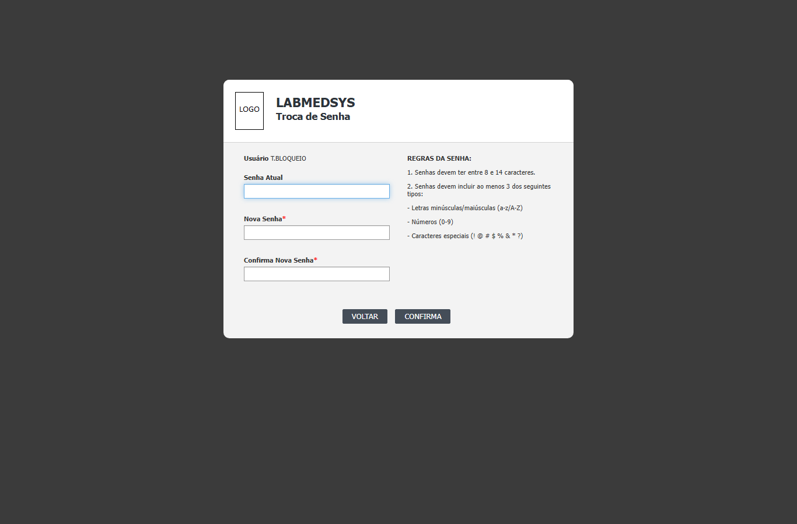
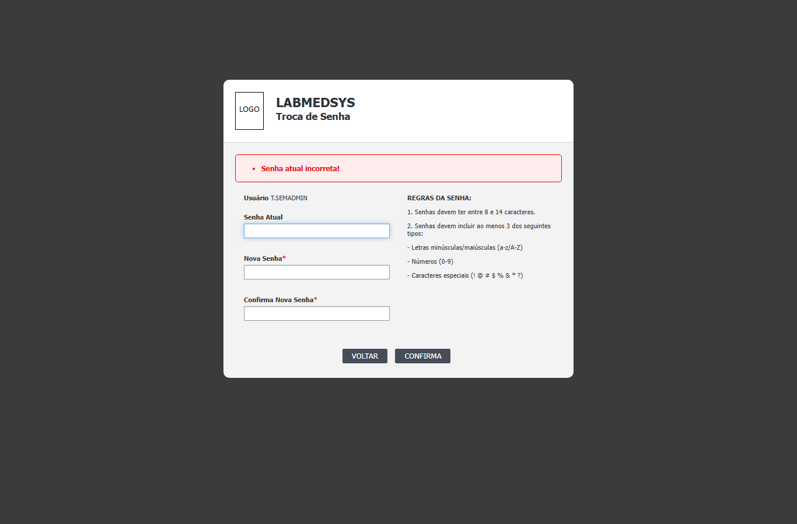
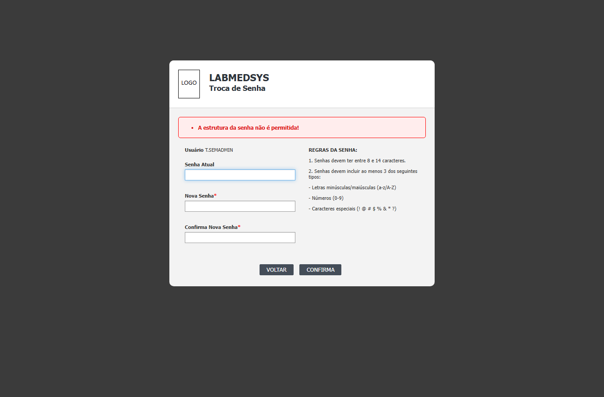

Para que serve
Trocar a senha. Abre sozinha depois do login quando a senha é provisória (primeiro acesso ou redefinida pelo administrador) ou está vencida, e também pode ser aberta por vontade própria pelo cadeado "Alterar Senha" do rodapé. A nova senha precisa seguir as regras mostradas na própria tela. Todos os usuários com sessão aberta usam.
Quem usa e em que etapa do processo
Quem usa
- Todo usuário do sistema, na primeira entrada, quando a senha vence e quando quer trocá-la.
- Quem pode abrir, incluir, alterar, excluir, imprimir e ver o histórico está em "Quem pode usar (permissões)", mais abaixo.
Em que etapa do processo entra (tela 2 do menu Acesso ao sistema, módulo Principal)
- Logo depois do login, se a senha é provisória (marcada para troca) ou está vencida.
- Pelo cadeado "Alterar Senha" do rodapé de qualquer tela do Principal (rodape.html:8). Esse caminho não foi testado.
O que acontece depois (para onde o trabalho segue)
- CONFIRMA não grava: abre a pergunta "Confirma a troca de senha?".
- SIM confere tudo e grava a nova senha: a senha antiga passa para a coluna de senha anterior, o contador de erros é zerado, a marca de troca obrigatória sai e a nova validade é calculada. Mostra "Senha alterada com sucesso!".
- OK encerra a sessão e volta ao Login. O usuário entra com a senha nova.
- VOLTAR sai sem trocar: se a troca era obrigatória, encerra a sessão e volta ao Login; senão, volta à tela inicial.
Fonte: Resumo da tela e fluxo da tela (leitura do código e dos testes). O que for leitura da área precisa ser validado com a área.
Antes de começar (o que precisa existir)
| Precisa existir | Para quê | Onde se cadastra |
|---|---|---|
| Sessão aberta (login feito) | Sem sessão a tela leva à Sessão Expirada | Login (tela 01) |
| Senha atual conhecida | É conferida antes de gravar | Senha provisória gerada pelo administrador em Administração › Conta usuário (Reset de senha) |
Passo a passo
Situação das imagens (14/11/2026): imagens reaproveitadas dos testes de 05/10/2026, cada uma conferida contra o texto. Sem imagem: campos obrigatórios vazios, a pergunta de confirmação, a mensagem de sucesso, o botão VOLTAR e a entrada pelo cadeado do rodapé.
- A tela mostra o seu Usuário (só leitura), três campos (Senha Atual, Nova Senha, Confirma Nova Senha), as "REGRAS DA SENHA" à direita e os botões VOLTAR e CONFIRMA (trocaSenha.aspx:95-137).

Figura 1: a Troca de Senha aberta no primeiro acesso depois do Reset de senha (usuário T.BLOQUEIO): três campos vazios, as regras da senha e os botões VOLTAR e CONFIRMA.
- Digite a senha atual, a nova senha e repita a nova senha. Cada campo aceita no máximo 14 caracteres.
- Clique em CONFIRMA. O sistema pergunta "Confirma a troca de senha?". Clique em SIM.
- Com "Senha alterada com sucesso!", clique em OK. O sistema encerra a sessão e volta ao login. Entre com a senha nova.
Regras da senha (como a tela mostra): entre 8 e 14 caracteres; ao menos 3 tipos entre letras, números e caracteres especiais (! @ # $ % & * ?). Na prática o código exige uma letra, um número e um caractere especial da lista (trocaSenha.aspx:117). Não pode ser igual à atual nem às duas anteriores.
O que acontece ao confirmar ou salvar
- Grava a nova senha (cifrada); a senha antiga passa para a coluna de senha anterior, o contador de erros é zerado, a marca de troca obrigatória sai e a nova validade é calculada (dalUsuario.cs:1179-1211).
- Mostra "Senha alterada com sucesso!" e, ao clicar em OK, encerra a sessão e abre o Login.
- A troca não é registrada no histórico da conta (ponto observado no código).
O que o sistema recusa
A mensagem aparece em uma faixa vermelha dentro da tela.
| Mensagem | Quando aparece | Imagem |
|---|---|---|
| Senha atual incorreta! | A senha atual digitada não confere (CT-PRI-031) | Figura 2 |
| A estrutura da senha não é permitida! | Nova senha curta, só letras, sem número ou sem símbolo (CT-PRI-032) | Figura 3 |
| Nova senha e senha anterior não devem ser iguais! | A nova senha é igual à atual, sem diferenciar maiúsculas de minúsculas (CT-PRI-034) | Figura 4 |
| Senha não pode ser igual as 3 últimas senhas utilizadas! | A nova senha repete uma das duas anteriores (CT-PRI-035) | Figura 5 |
| A senha atual é obrigatória! / A senha nova é obrigatória! / A confirmação da senha é obrigatória! | Campo em branco (não vista em teste) | sem imagem |
| Nova senha e confirmação devem ser iguais! | A confirmação difere da nova senha (não vista; no teste a confirmação com caixa diferente foi aceita, DV-PRI-021) | sem imagem |
| Erro ao alterar senha! | A gravação falhou (não vista) | sem imagem |

Figura 2: a Troca de Senha com a faixa vermelha "Senha atual incorreta!" (usuário T.SEMADMIN).

Figura 3: a faixa vermelha "A estrutura da senha não é permitida!" para uma nova senha fora das regras.
Figura 4: a faixa vermelha "Nova senha e senha anterior não devem ser iguais!".
Figura 5: a faixa vermelha "Senha não pode ser igual as 3 últimas senhas utilizadas!".
Quem pode usar (permissões)
- A tela não exige função de perfil: qualquer usuário com sessão aberta a abre (trocaSenha.aspx.cs não chama a verificação de função). Sem sessão, leva à Sessão Expirada.
- Todos os botões aparecem para todos.
- A senha atual e a estrutura da nova são conferidas no servidor; o limite de 14 caracteres do campo só vale no navegador.
Cuidados e falhas conhecidas
- DV-PRI-022 (Alta): com a troca obrigatória pendente, outras telas abrem pelo endereço sem trocar a senha. A obrigação só vale na entrada.
- DV-PRI-021 (Baixa): o sistema compara as senhas sem diferenciar maiúsculas de minúsculas: recusa trocar para uma senha que só muda a caixa das letras e aceita a confirmação digitada com caixa diferente da nova senha.
- DV-PRI-003 (Alta, tela Conta usuário): o administrador vê a senha provisória; a troca obrigatória é a única barreira.
- A tela não avisa antes de a senha vencer.
- O limite de 14 caracteres não se confirmou no teste: uma senha de 40 caracteres foi aceita (CT-PRI-033, feito por automação). Ponto para validar com a área.
- A senha vencida de verdade não foi vista em teste (CT-PRI-036, bloqueado).
Botões da tela
| Botão ou ação | Quando aparece | O que faz | Para onde leva |
|---|---|---|---|
| CONFIRMA | Sempre | Abre a pergunta "Confirma a troca de senha?" | Pergunta de confirmação |
| SIM | Depois de CONFIRMA | Valida e grava | "Senha alterada com sucesso!" ou mensagem de recusa |
| NÃO | Depois de CONFIRMA | Fecha a pergunta e volta aos campos | Fica na tela |
| OK | Depois da mensagem de sucesso | Encerra a sessão | Login |
| VOLTAR | Sempre | Sai sem trocar; se a troca era obrigatória, encerra a sessão e vai ao Login, senão vai à tela inicial | Login ou tela inicial |
| Tecla Enter | Nos campos | Não faz nada (bloqueada) | Fica na tela |
Campos da tela
Caminhos das fontes na seção Resumo da tela. "Só no navegador" quando só o navegador confere; "Sim (servidor)" quando o servidor também recusa.
| Campo na tela | Tipo | Obrigatório | Regra, limite ou valores possíveis | Fonte |
|---|---|---|---|---|
| Usuário | Texto travado | Não se aplica | Mostra o login de quem está logado | trocaSenha.aspx:99-100; trocaSenha.aspx.cs:25 |
| Senha Atual | Texto oculto | Sim (servidor): "A senha atual é obrigatória!" | No navegador, no máximo 14 caracteres. O servidor cifra a senha digitada e compara com a gravada | trocaSenha.aspx:107-108; trocaSenha.aspx.cs:83-96 |
| Nova Senha | Texto oculto | Sim (servidor): "A senha nova é obrigatória!" | No navegador, no máximo 14 caracteres. No servidor, deve ter 8 a 14 caracteres com ao menos uma letra, um número e um caractere especial entre ! @ # $ % & * ? | trocaSenha.aspx:115-117 |
| Confirma Nova Senha | Texto oculto | Sim (servidor): "A confirmação da senha é obrigatória!" | No navegador, no máximo 14 caracteres. Deve ser igual à nova senha, sem diferenciar maiúsculas de minúsculas | trocaSenha.aspx:124-125; trocaSenha.aspx.cs:99-104 |
| REGRAS DA SENHA | Texto fixo | Não se aplica | Lista as regras: 8 a 14 caracteres e ao menos 3 dos tipos | trocaSenha.aspx:130-135 |
Botões e ações
| Botão ou ação | Quando aparece | O que faz | Para onde leva | Fonte |
|---|---|---|---|---|
| CONFIRMA | Sempre | Guarda as três senhas digitadas em campos escondidos da página e abre a pergunta de confirmação | Pergunta "Confirma a troca de senha?" | trocaSenha.aspx:141; trocaSenha.aspx.cs:34-46 |
| SIM | Depois de CONFIRMA | Valida a estrutura, confere a senha atual, a confirmação, a igualdade com a atual e o histórico; se tudo passar, grava | "Senha alterada com sucesso!" ou mensagem de recusa | trocaSenha.aspx:157; trocaSenha.aspx.cs:62-191 |
| NÃO | Depois de CONFIRMA | Fecha a pergunta e volta aos campos | Fica na tela | trocaSenha.aspx:158; trocaSenha.aspx.cs:193-197 |
| OK | Depois de "Senha alterada com sucesso!" | Encerra a sessão | Login | trocaSenha.aspx:161; trocaSenha.aspx.cs:55-60 |
| VOLTAR | Sempre | Sai sem trocar. Se a troca era obrigatória, encerra a sessão e vai ao Login; senão, vai à tela inicial | Login ou tela inicial | trocaSenha.aspx:140; trocaSenha.aspx.cs:48-53 |
| Tecla Enter | Nos campos | Não faz nada (o Enter é bloqueado) | Fica na tela | trocaSenha.aspx:50-58 |
Mensagens do sistema
Nem todas foram vistas numa tela. As marcadas "vista em teste" aparecem no resultado da rodada de 05 e 06/10/2026.
| Mensagem (texto exato do código) | Quando aparece | Fonte |
|---|---|---|
| A senha atual é obrigatória! | Senha atual em branco | trocaSenha.aspx:108 |
| A senha nova é obrigatória! | Nova senha em branco | trocaSenha.aspx:116 |
| A confirmação da senha é obrigatória! | Confirmação em branco | trocaSenha.aspx:125 |
| A estrutura da senha não é permitida! | Nova senha curta, só letras, sem número ou sem símbolo. Vista em teste: CT-PRI-032 | trocaSenha.aspx:117 |
| Senha atual incorreta! | A senha atual digitada não confere. Vista em teste: CT-PRI-031 | trocaSenha.aspx.cs:91-96 |
| Nova senha e confirmação devem ser iguais! | A confirmação difere da nova senha, sem considerar maiúsculas e minúsculas. Não vista (no teste, a confirmação com caixa diferente foi aceita: DV-PRI-021) | trocaSenha.aspx.cs:99-104 |
| Nova senha e senha anterior não devem ser iguais! | A nova senha é igual à atual, sem considerar maiúsculas e minúsculas. Vista em teste: CT-PRI-034 | trocaSenha.aspx.cs:107-112 |
| Senha não pode ser igual as 3 últimas senhas utilizadas! | A nova senha repete uma das duas anteriores guardadas (a atual já foi barrada antes). Vista em teste: CT-PRI-035 | trocaSenha.aspx.cs:120-131 |
| Confirma a troca de senha? | Pergunta antes de gravar. Vista em teste: CT-PRI-001 e 030 | trocaSenha.aspx.cs:44 |
| Senha alterada com sucesso! | Gravação feita. Vista em teste: CT-PRI-001 e 030 | trocaSenha.aspx.cs:140 |
| Erro ao alterar senha! | A gravação no banco falhou. Não vista | trocaSenha.aspx.cs:148 |
Quem pode fazer o quê
Ainda não levantado para esta tela
O quadro "Quem pode fazer o quê" é preenchido a partir de testes de tela por perfil (nível, área e etapa do registro), nunca por suposição. Esta tela ainda não passou por esse levantamento.